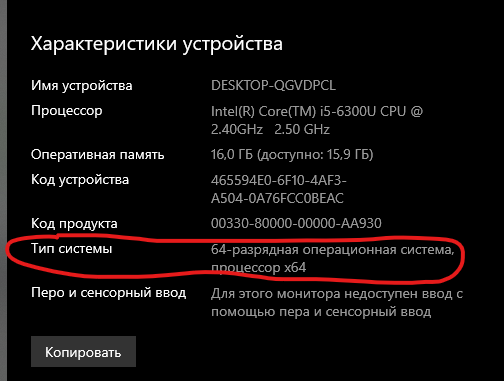
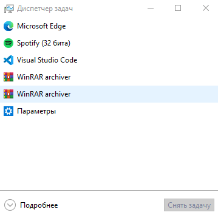

Minecraft for Windows
Об Minecraft for Windows
Minecraft для Windows
Исследуйте случайным образом генерируемые
миры и стройте разные удивительные
сооружения: от простейших домов до
грандиозных замков и дворцов. Играйте в
творческом режиме с неограниченными
ресурсами или вгрызайтесь в недра мира в
режиме выживания, изготавливая оружие и
доспехи для защиты от опасных мобов.
Взбирайтесь на скалистые горы, открывайте
запутанные пещеры и разрабатывайте богатые
рудные жилы. Откройте для себя биомы
«Заросшие пещерные» и «Карстовые пещеры».
Осветите свой мир свечами, чтобы показать,
какой вы опытный спелеолог и
мастер-альпинист!
Режим разработчика и Рязрядность ОС
Для того чтобы поиграть в Minecraft for Windows вам требуется иметь процессор с x64 разрядностью. Проверить это вы можете в свойствах компьютера. Зайдите в Пуск > Параметры > Система > О программе

То есть у вас должен быть тип системы
64-разрядная операционная
система
Следующим шагом нам нужно включить режим
разработчика в параметрах. Для этого зайдите
в
Пуск > Параметры > Обновления и
безопасность > Для
разработчиков
и включите режим разработчика
Закройте Microsoft Store
На всякие случай закройте Microsoft Store. Если во время процесса установки он будет открыть, то в дальнейшем могут быть ошибки. Чтобы проверить не запущен ли у вас Microsoft Store Нажмите ПКМ по панели задач и затем нажмите на Диспетчер задач Если у вас Диспетчер задач открылся как на скриншоте снизу, нажмите на подробнее
Затем на вкладке Процессы ищите Microsoft Store. Если вы его нашли то нажмите на него ПКМ и снять задачу. А елси же не нашли то можете идти к следющему шагу
Установка
Итак мы подобрались к установке. Для начала скачайте архив по ссылке Скачать архив